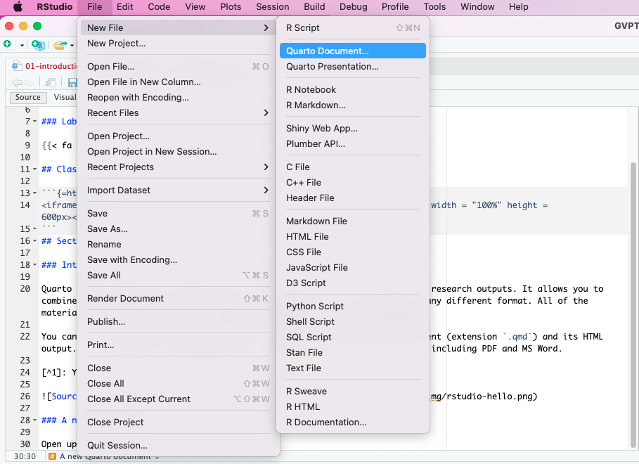
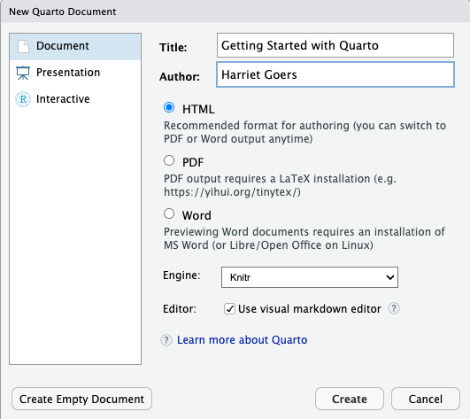
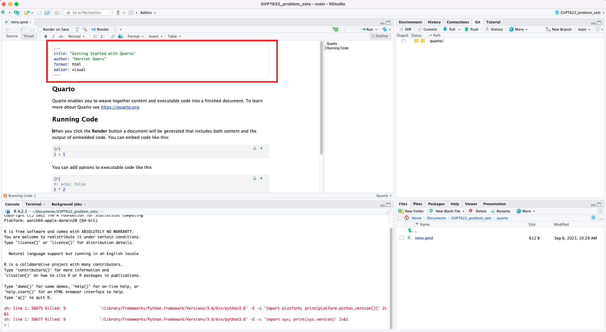
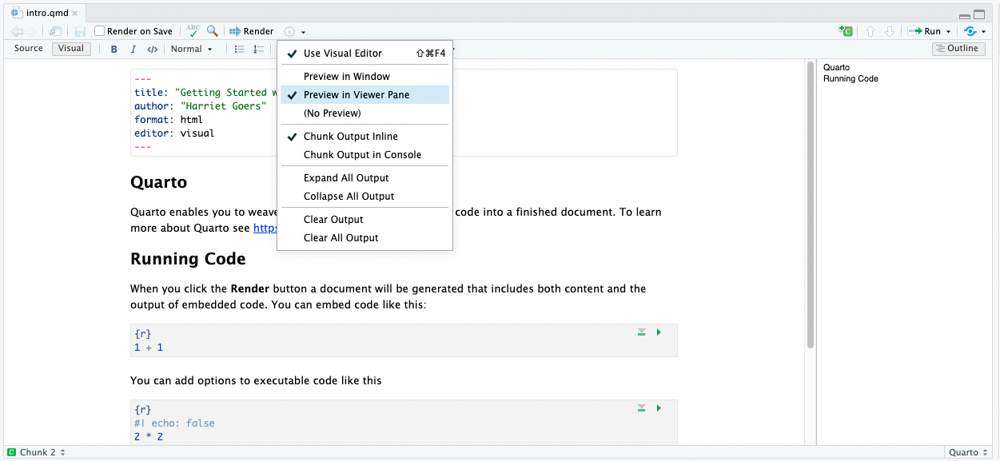
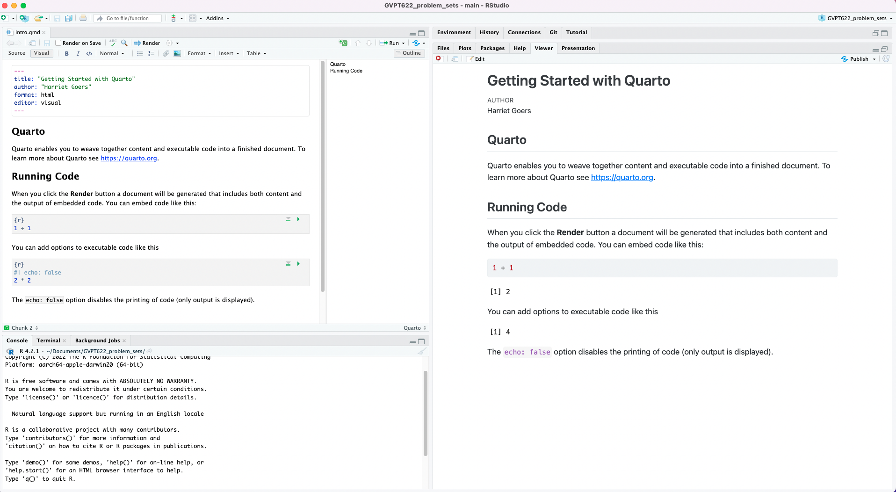
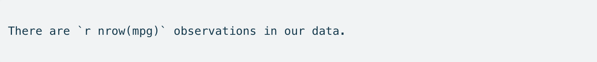

Introduction to Quarto and markdown
Quarto is a tool that helps you to create fully reproducible research outputs. It allows you to combine your code, results, and prose in one document. For example, this website - with all of its R code, prose, and visualizations - was created using Quarto.
You can use Quarto from RStudio.1 Below is a screen shot of a Quarto document (file extension .qmd) and its HTML output. You can render a Quarto document to many different types of formats, including PDF and MS Word.

Let’s make a new Quarto document, including some R code and prose.
A new Quarto document
Open up a new Quarto document in RStudio:

Fill in the relevant fields:

Your new document will have a .qmd file extension. It will also already contain some text and code. Most of this is demonstrative and can be deleted. However, the top section is very important and should be kept. This section (written in YAML) includes the metadata for your document. By default, it includes the title, author, format in which it will rendered, and the default RStudio editor.
Switch your output (format) from HTML to PDF by changing html to pdf.
A full list of the formats to which you can render your Quarto document is provided here.

There are two ways to work with and view Quarto documents. The default editor is visual, which follows a more “what-you-see-is-what-you-get” style. If you have worked a lot with MS Word documents or Google Docs, this interface will look familiar. Alternatively, you can edit in source, which looks more like a raw script. To switch between the two, you can use the Source and Visual icons in the top left hand side of the screen.
I find myself switching between these two formats all the time. The visual editor is much easier to work in when writing, but it can be a bit buggy when it comes to writing code. I work in source when I am writing and running R code.
Rendering your document
To render your document into your chosen format (in this case: HTML), you need to hit the Render icon in the document’s top bar. This will produce an HTML version of your Quarto document in the same folder in which you saved your Quarto document.
You can preview your document in RStudio by changing your settings to Preview in Viewer Pane.

Now, whenever you render your document a preview of it will show up in the Viewer pane (which is in the same place as your Files, Plots, and Help panes).

If you toggle on the Render on Save option, your Quarto document will render and update your viewer every time you hit save. This can be helpful when you are formatting your document.
Writing prose in Quarto
You can write prose as you would in any other text editor in Quarto. When you are in the Visual editor model, Quarto provides you with the shortcut keys for many of the formats you use in other text editors, including MS Word and Google Docs. You can also use your usual keyboard shortcuts.
In the Source editor mode, you will need to use markdown. Markdown is a lightweight markup language that allows you to format plain text. It gives you a lot of control over the format of your text documents (similar to Latex).
Complete this great Markdown tutorial.
Running code in Quarto
You can also run code from within your Quarto document. You can do this through a code chunk or in-line code. I will step through both options now.
Code chunks
A code chunk starts with ```{r} and ends with ```. You can then write whole “chunks” of code that will output in your rendered document.
For example, I will load the tidyverse R package into my current session:
```{r}
#| echo: true
library(tidyverse)
```You can specify your chunk options using #| at the start of the line. For example, above I specified that I wanted the code in the code chunk to be shown when I render my document. You can hide the code by changing the chunk option echo to false. There are many different chunk options that you can control. A full list can be found here.
You can set the chunk options in the individual chunks, as show above. Alternatively, you can set them universally in the YAML section at the top of your Quarto document using the execute command. For example:
```{yaml}
execute:
echo: true
message: false
warning: false
```This will apply to all code chunks unless you overwrite it by including chunk-specific options in a code chunk.
Code chunks are useful for running large amounts of code. Commonly, I use them to include a plot, a regression table, or to read in my data or model results. For example, you can write the code to create a ggplot directly in your document.

In-line code
You will often want to reference numbers or results in your prose. For example, I may be writing up the data section of a paper and want to specify that my data set includes 100 observations. If I were to write this in normally and then go away and collect more data, I would need to come back and update this number manually to reflect my new number of observations. I may do this several times (very tedious) or I may miss a time (we are all human). In-line coding allows you to make these updates programmatically.
You include R code directly in your prose using the expression: r. For example:

Will render as: There are r nrow(mpg) observations in our data. No need to go and update this reference if that number changes!
scales is a great R package for formatting numbers.
For example, R will output raw numbers such as 1000000000 and 8932348920. scales allows you to format these numbers so they are easier to read: scales::comma(1000000000) gives you r scales::comma(1000000000) and scales::dollar(8932348920) gives you r scales::dollar(8932348920).
You can use Quarto to produce all kinds of fully reproducible documents, including journal articles and reports. You can also use it to produce very professional-looking presentations. Finally, you can even use it to produce websites. In fact, all of the resources provided to you here were produced in Quarto.
Footnotes
You can also use it from VS Code, Jupyter, Neovim, and Editor.↩︎